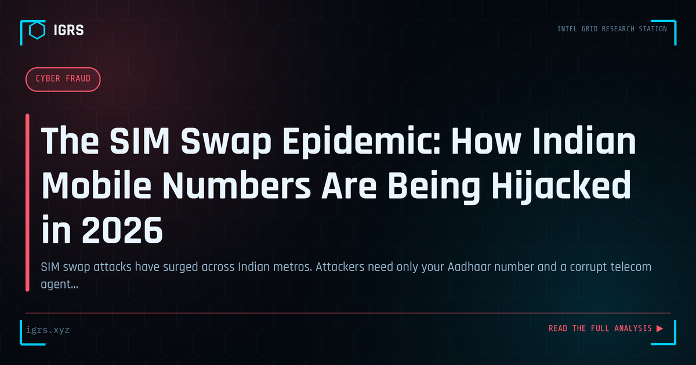

The SIM Swap Epidemic: How Indian Mobile Numbers Are Being Hijacked in 2026
| File No. | IGRS-014/2026 |
| Subject | SIM swap fraud mechanics, telecom loopholes, and defensive countermeasures for Indian users |
| Category | Cyber Fraud |
| Author | Manuj Kumar Pandey |
| Published | 2026-04-02 |
| Reading time | 12 minutes |
SIM swap attacks have surged across Indian metros. Attackers need only your Aadhaar number and a corrupt telecom agent to seize your number — and everything tied to it.
SIM Swap Fraud in India: The 2026 Picture
SIM swap fraud — where criminals hijack a victim's mobile number to intercept OTPs and take over accounts — remains one of the most damaging fraud techniques in India. As banking, UPI, and government services increasingly rely on mobile-based authentication, the consequences of a hijacked number have grown severe. This guide examines SIM swap fraud in India and how to investigate and prevent it.
How SIM Swap Fraud Works
SIM swap fraud exploits the process by which a mobile number is transferred to a new SIM. Criminals gather the victim's personal information, then impersonate them to the mobile operator — through social engineering, fraudulent documentation, or insider collusion — to get the number issued on a SIM they control. Once they control the number, they intercept the OTPs that protect bank accounts, UPI, and email, enabling account takeover and theft.
The Attack Chain
| Stage | Action |
|---|---|
| Reconnaissance | Gather victim's personal data |
| SIM swap | Hijack number via operator |
| OTP interception | Receive victim's verification codes |
| Account takeover | Access banking, UPI, email |
| Cash-out | Transfer funds, mule accounts |
Warning Signs for Victims
Victims often receive warning signs before the fraud completes: unexpected loss of mobile network signal (the moment the number transfers to the criminal's SIM), inability to make calls or send messages, notifications about a SIM change, and unexpected account activity. Recognising sudden, unexplained loss of mobile service as a potential SIM swap — and acting immediately — can prevent the account takeover that follows.
Investigating SIM Swap Fraud
Investigation reconstructs the attack chain through records obtained under legal authority. Mobile operator records reveal when and how the SIM swap occurred and may identify the point of compromise or insider involvement. Banking records trace the unauthorised transactions and fund flow. Production of these records is obtained under Section 94 BNSS, and electronic evidence is certified under Section 63 BSA. The investigation aims to trace both the money and the method of the swap.
Applicable Legal Provisions
SIM swap fraud attracts multiple provisions: Section 318 BNS (cheating), Section 319 BNS (cheating by personation), and Section 66C and 66D IT Act (identity theft and personation using a computer resource). Where insider involvement at the operator is established, additional charges apply. The fraud's reliance on impersonation and unauthorised access makes these identity and cheating provisions central to prosecution.
Prevention and Response
Individuals reduce SIM swap risk by preferring app-based authenticators or hardware keys over SMS OTP for critical accounts, setting a SIM PIN, limiting personal information exposure, and acting immediately if mobile service is unexpectedly lost. If victimised, the priority response is to contact the mobile operator to reclaim the number, alert banks to freeze accounts, change passwords, report to the bank and the cybercrime helpline 1930, and file a complaint at cybercrime.gov.in. Rapid action within the critical early window can limit or prevent loss, making awareness of the warning signs and the response steps the most valuable protection against this pervasive and damaging fraud.